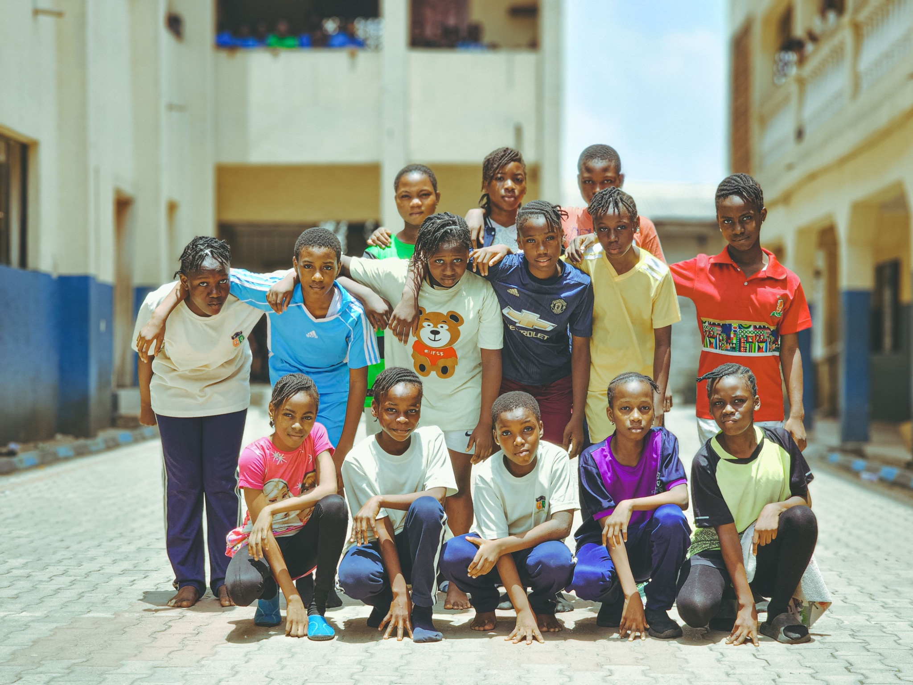

Safe Accommodation
A stable, comfortable and caring place where children can feel protected and at home.
A place where every child feels loved, safe and at home.
A Safe Place To Belong
Tshinakaho Haven is a proposed non-profit children's home dedicated to providing a safe, caring and supportive environment for orphaned and vulnerable children.
Our aim is to create a family-like home where children feel loved, respected, valued and supported as they grow.

Our Purpose
Tshinakaho Haven aims to provide more than accommodation. We want to create an environment where children receive the care, support and opportunities they need to develop physically, emotionally, socially and academically.
What We Provide
Our proposed services focus on creating a stable environment where children can feel safe, continue their education and develop the skills they need for the future.
A stable, comfortable and caring place where children can feel protected and at home.
Nutritious meals that support children's health, wellbeing and development.
Homework assistance, school supplies, learning resources and a suitable environment for studying.
Clothing and everyday personal care essentials that promote dignity and wellbeing.
A caring environment where children feel heard, respected, valued and supported.
Opportunities to build confidence, relationships and practical skills for greater independence.
Make A Difference
Tshinakaho Haven will depend on the support of individuals, volunteers, donors, sponsors and community partners who share our vision of creating a safe and supportive home for vulnerable children.
Find out how you can get involvedContact & Location
If you would like more information about Tshinakaho Haven, volunteering, donations, sponsorships or partnerships, please get in touch with us.